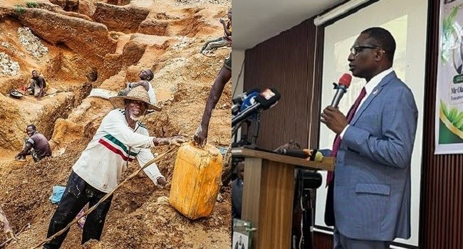

EFCC Links Illegal Mining To Insecurity, Organised Crime, Vows To Target Financiers

The Economic and Financial Crimes Commission (EFCC) has linked illegal mining and mineral theft to insecurity and organised crime in Nigeria. Chairman Ola Olukoyede said criminal networks exploit weaknesses in the sector, and warned that enforcement must target those financing and benefiting from illegal operations as well as miners at extraction sites.
Speaking at a public lecture and capacity-building workshop in Ilorin, Kwara State, Olukoyede said unregulated activity can create opportunities for extortion, smuggling, violence and territorial disputes. Proceeds from mineral theft may also finance other crimes, he said, making illegal mining more than a licensing issue.
The EFCC recorded 52 illegal mining cases between October 2023 and July 2026 and secured the forfeiture of 102 tonnes of solid minerals, Olukoyede said. He described investigations into networks involving local and international participants, with separate roles in financing operations, extracting and transporting minerals, arranging documentation and buying illegally obtained resources. The commission’s approach, he said, is to trace financial transactions and identify those who profit.
Olukoyede clarified that the EFCC does not regulate mining or issue licences. Its role is to investigate suspected corruption, fraud, money laundering, illicit financial flows and criminal proceeds. He warned that public officials who facilitate illegal mining, manipulate licences or launder proceeds would also face investigation.
He called for better coordination among mining regulators, financial intelligence institutions, law enforcement, customs and revenue agencies, saying fragmented information makes it harder to track criminal networks. He also urged host communities, traditional institutions, civil society and local leaders to report suspicious activity, and called on organised labour to advocate for lawful mining and decent working conditions. The EFCC, he said, will pursue financiers and facilitators, trace illicit proceeds, recover assets and prosecute suspects based on evidence.
Source: Channels TV